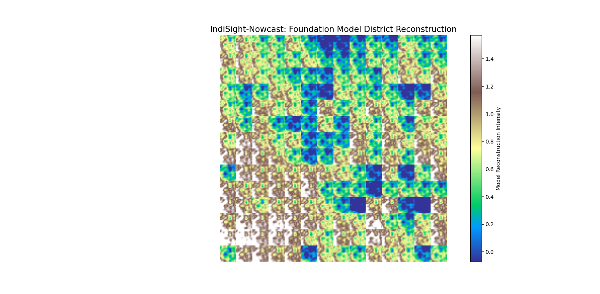
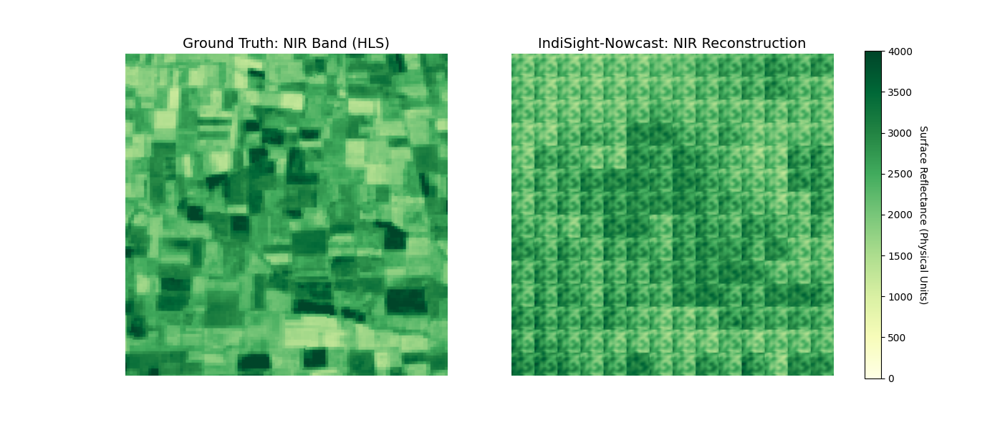

IndiSight-Nowcast
Spatio-Temporal District Reconstruction via Prithvi-100M
Ashoka University | Data Science and Management
Contributors: Shubham Agarwal & Sarthak Rathi
Instructor: Prof. Lipika Dey
1. Project Utility
IndiSight-Nowcast is a specialized geospatial tool designed to fill temporal gaps in satellite data. By predicting the biophysical state of Indian districts based on historical trends, it enables continuous agricultural and environmental monitoring even when real-time data is unavailable.
2. Unified Development Workflow
The project was executed across two specialized development streams:
- The Vision Pipeline: Focused on the ViT architecture, HPC stability, and radiometric scaling.
- Analytical Framework: Focused on district-wise trend analysis and socio-economic interpretation.
3. Technical Implementation (HPC & ViT)
Using the university's HPC cluster, we deployed the Prithvi-100M model using a 3-frame temporal window. Key hurdles included solving the "quilt" artifacting issue through custom spatial decoding and performing inverse Z-score normalization to restore data to physical reflectance units (0-4000).

Fig 1: Reconstructed morphology of the target district.

Fig 2: Spectral fidelity analysis for the NIR band.
4. Analytical Results
This report documents the current implementation state (April 2026), the available data artifacts, and high-level analytical insights produced by the project.
Key Implementation Summary
- Data Engineering: Harmonized NFHS/PMGSY/MGNREGA ingestion producing parquet outputs; PostGIS seeding utilities implemented.
- EDA Artifacts: 50+ interactive Plotly artifacts and multiple diagnostics CSVs generated in data/processed/eda_artifacts/.
- Vision Proof-of-Concept:
Prithvi.py and inference scripts are present. The pretrained weights Prithvi_100M.pt are included at the repository root, enabling local inference and validation.
- Dashboard: Streamlit app at app/main.py with map, agent scaffold, and EDA viewer.
Selected EDA Insights
- Spatial clustering is present across many health and infrastructure metrics (Moran's I diagnostics available).
- Southern states show consistently higher electrification and sanitation metrics; pockets of low values are visible in several northern states.
- Missingness and outlier diagnostics are pre-computed; refer to data/processed/eda_artifacts/ for details.
EDA Artifact Interpretations

Correlation heatmap: Pairwise metric correlations highlighting co-varying indicators and potential redundancies among the NFHS metrics.

Electrification map: District-level choropleth for electrification; clear Southern clusters and northern pockets of low coverage.

Distribution: Histogram and KDE for district electrification values, showing skew and tail behaviour.

Drift (2015 vs 2019): Box comparison indicating which districts improved vs those that stagnated.

National trend: Time-series aggregate visualizing national progress in electrification.

State ranking: Top and bottom performing states for electrification in 2019.

Infrastructure vs Outcome: PMGSY road length vs district electrification — helps interpret infrastructure-investment relationships.
How to reproduce the analysis locally
- Start PostGIS and Qdrant with
docker-compose up -d.
- Run the tabular ingestion and seeding scripts:
pixi run python -m src.data_engine.ingest_tabular and pixi run python -m src.data_engine.seed_postgis.
- Open the dashboard:
pixi run streamlit run app/main.py and explore the three main tabs (3D Map, AI Policy Assistant, Metrics & EDA).
Available Artifacts (local)
- data/processed/tabular/ — Harmonized NFHS, PMGSY, MGNREGA parquet files.
- data/processed/spatial/ — LGD-aligned GeoJSON boundaries.
- data/processed/eda_artifacts/ — Plotly JSON artifacts and CSV diagnostics (Moran's I, missingness, outliers).
Next Steps
- Run the included vision inference and validation locally (see docs/tutorial.md). If you generate new embeddings, validate them with src/utils/contract_validator.py.
- Write narrative explanations for EDA artifacts and integrate them into the dashboard tutorial.
- Prepare Streamlit Cloud deployment (secret management + DB connectivity).
View Vision Pipeline Code |
Main Repository